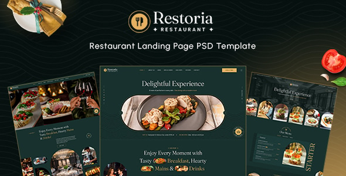

Featured Work



I create immersive digital experiences using motion, clean interfaces, and human-centered design.
Explore WorkI am a passionate UI/UX Designer dedicated to crafting digital stories that are not only visually stunning but also deeply intuitive. With a focus on User-Centered Design, I bridge the gap between complex functionality and seamless user experience.
My journey is driven by curiosity and the desire to solve real-world problems through design thinking. Whether it's a mobile app or a complex dashboard, I aim for pixel-perfection and meaningful interaction.
Modern layouts, typography, and visual hierarchy for pixel-perfect designs.
Building logical journeys and wireframes that prioritize user ease.
Bringing designs to life with micro-interactions and smooth animations.
Available for freelance and full-time opportunities.